세 parquet 파일을 원본 수정 없이 읽고, subject-level 요약 feature를 만든 뒤 PCA, 그룹 중심 거리, KMeans, hierarchical clustering을 수행했다.
| dataset | original_group | mapped_group | subjects_in_file | rows_in_file | subjects_used_by_reference_rule | subjects_extra_vs_reference | subjects_missing_from_reference |
|---|---|---|---|---|---|---|---|
| slim_gait | ACLD | ACLD | 27 | 350793 | 27 | 0 | 0.0000 |
| slim_gait | ACLR | ACLR | 27 | 311449 | 27 | 0 | 0.0000 |
| slim_gait | HA | HA | 25 | 332902 | 25 | 0 | 0.0000 |
| raw_merged | ACLD | ACLD | 40 | 510051 | 27 | 13 | 0.0000 |
| raw_merged | ACLR | ACLR | 27 | 311449 | 26 | 1 | 1.0000 |
| raw_merged | Healthy adolescents | Healthy adolescents | 22 | 282954 | 0 | 22 | NaN |
| raw_merged | Healthy adults | HA | 25 | 332902 | 25 | 0 | 0.0000 |
| cycle_waveforms_101 | ACLD | ACLD | 27 | 2938 | 27 | 0 | 0.0000 |
| cycle_waveforms_101 | ACLR | ACLR | 27 | 2698 | 27 | 0 | 0.0000 |
| cycle_waveforms_101 | HA | HA | 25 | 2443 | 25 | 0 | 0.0000 |
| dataset | subjects | HA | ACLD | ACLR | features | PC1_var | PC2_var | cum_var_5PC |
|---|---|---|---|---|---|---|---|---|
| slim_gait | 79 | 25 | 27 | 27 | 240 | 0.1512 | 0.0909 | 0.4397 |
| raw_merged | 78 | 25 | 27 | 26 | 7268 | 0.1101 | 0.0888 | 0.3723 |
| cycle_waveforms_101 | 79 | 25 | 27 | 27 | 10908 | 0.1125 | 0.0972 | 0.3840 |
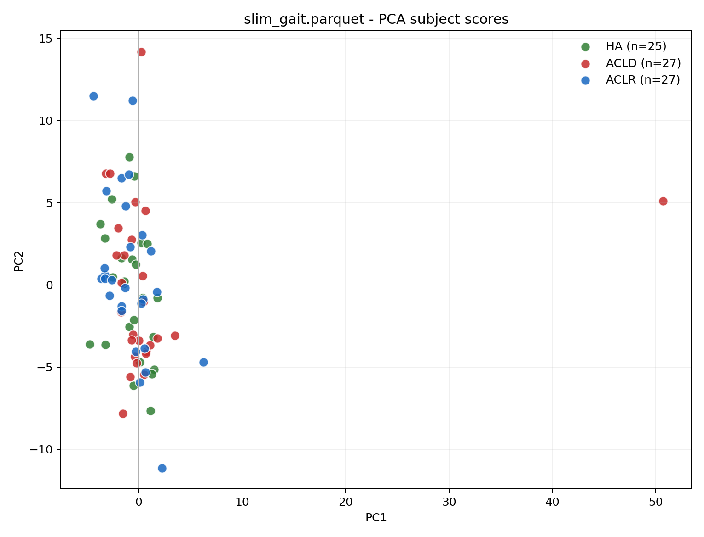
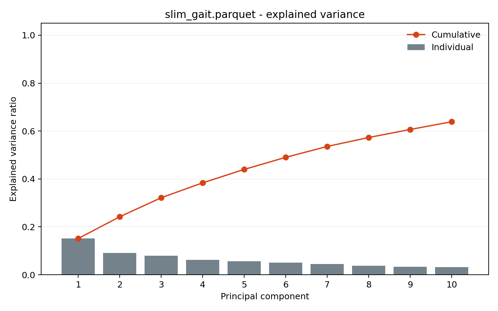
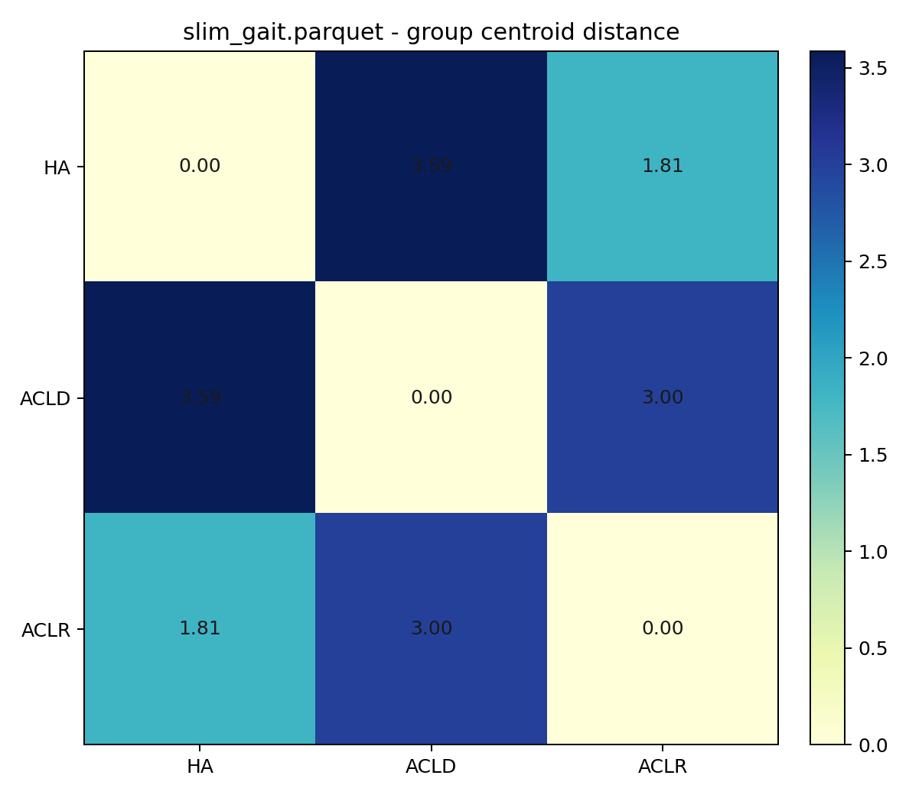
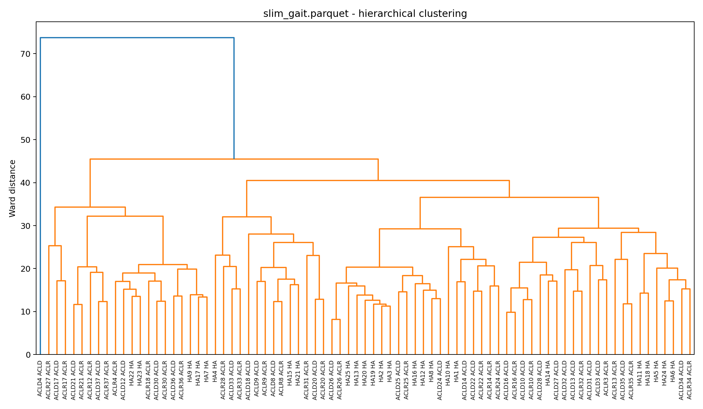
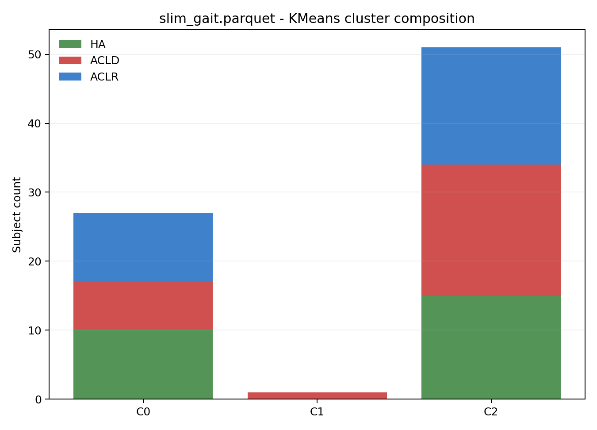
| feature | PC1 | abs_loading |
|---|---|---|
| slow__jointAngle_49__std | 0.1613 | 0.1613 |
| slow__jointAngle_58__min | -0.1608 | 0.1608 |
| slow__jointAngle_46__min | -0.1602 | 0.1602 |
| slow__jointAngle_57__min | -0.1601 | 0.1601 |
| slow__jointAngle_50__max | 0.1596 | 0.1596 |
| slow__jointAngle_46__max | 0.1596 | 0.1596 |
| slow__jointAngle_58__max | 0.1591 | 0.1591 |
| slow__jointAngle_59__min | -0.1586 | 0.1586 |
| slow__jointAngle_49__max | 0.1583 | 0.1583 |
| slow__jointAngle_59__max | 0.1571 | 0.1571 |
| slow__jointAngle_46__std | 0.1567 | 0.1567 |
| slow__jointAngle_54__min | -0.1565 | 0.1565 |
| feature | PC2 | abs_loading |
|---|---|---|
| normal__jointAngle_55__mean | 0.1542 | 0.1542 |
| fast__jointAngle_55__mean | 0.1475 | 0.1475 |
| fast__jointAngle_55__min | 0.1470 | 0.1470 |
| slow__jointAngle_55__mean | 0.1432 | 0.1432 |
| normal__jointAngle_56__mean | 0.1423 | 0.1423 |
| fast__jointAngle_56__mean | 0.1415 | 0.1415 |
| fast__jointAngle_56__min | 0.1404 | 0.1404 |
| normal__jointAngle_55__min | 0.1390 | 0.1390 |
| slow__jointAngle_56__mean | 0.1347 | 0.1347 |
| normal__jointAngle_56__min | 0.1340 | 0.1340 |
| normal__jointAngle_57__max | -0.1295 | 0.1295 |
| normal__jointAngle_57__std | -0.1288 | 0.1288 |
| feature | PC3 | abs_loading |
|---|---|---|
| normal__jointAngle_49__std | 0.1426 | 0.1426 |
| fast__jointAngle_49__std | 0.1417 | 0.1417 |
| fast__jointAngle_54__std | 0.1407 | 0.1407 |
| normal__jointAngle_61__std | 0.1347 | 0.1347 |
| normal__jointAngle_58__max | 0.1320 | 0.1320 |
| fast__jointAngle_58__max | 0.1299 | 0.1299 |
| normal__jointAngle_62__std | 0.1272 | 0.1272 |
| normal__jointAngle_50__min | -0.1240 | 0.1240 |
| fast__jointAngle_61__std | 0.1238 | 0.1238 |
| normal__jointAngle_54__std | 0.1201 | 0.1201 |
| normal__jointAngle_50__std | 0.1196 | 0.1196 |
| fast__jointAngle_42__std | 0.1195 | 0.1195 |
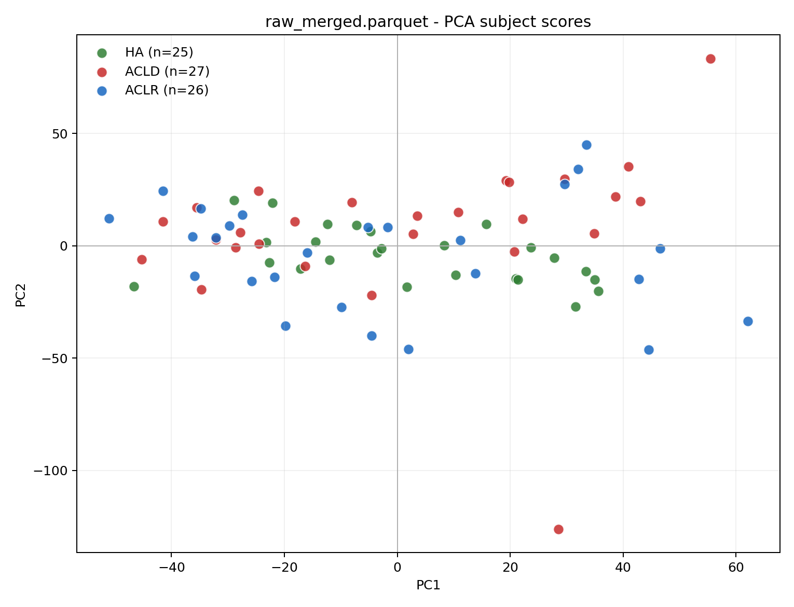
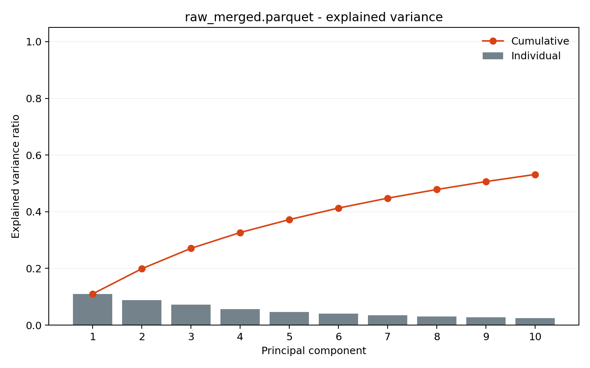
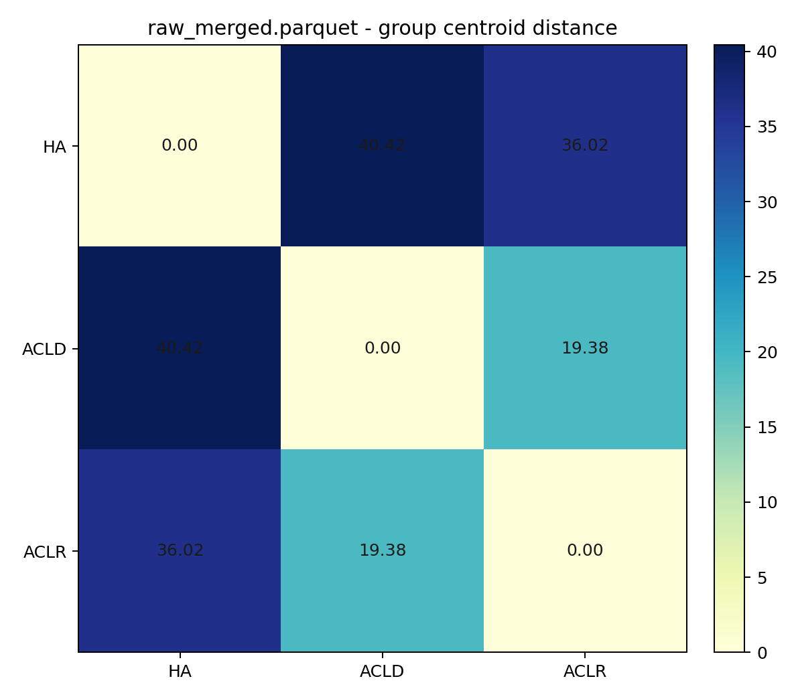
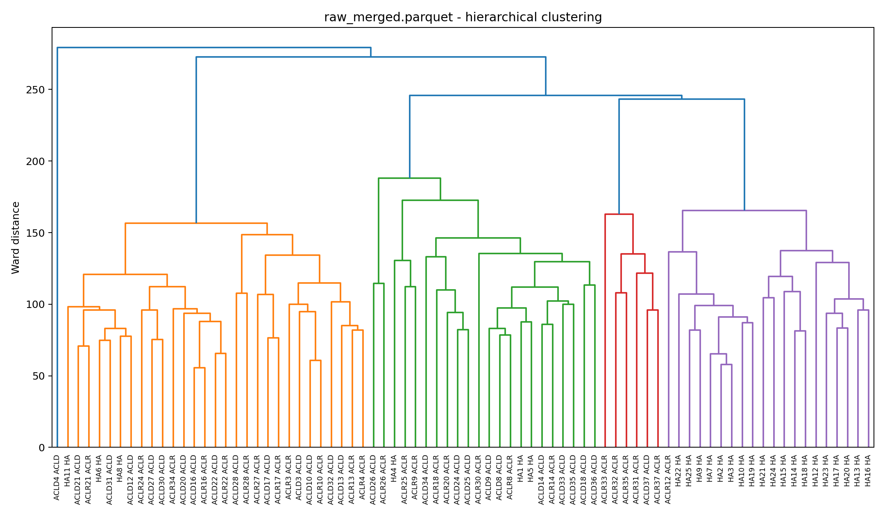
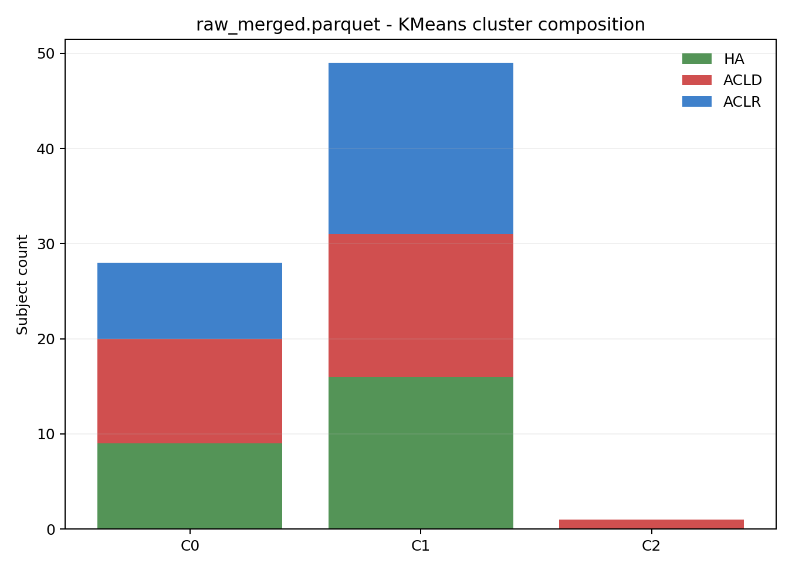
| feature | PC1 | abs_loading |
|---|---|---|
| normal__angularAcceleration_4__std | 0.0276 | 0.0276 |
| normal__angularAcceleration_7__std | 0.0276 | 0.0276 |
| normal__angularAcceleration_1__std | 0.0276 | 0.0276 |
| normal__angularAcceleration_10__std | 0.0275 | 0.0275 |
| normal__angularAcceleration_19__std | 0.0275 | 0.0275 |
| normal__angularAcceleration_37__std | 0.0275 | 0.0275 |
| normal__angularAcceleration_22__std | 0.0275 | 0.0275 |
| normal__angularAcceleration_16__std | 0.0275 | 0.0275 |
| normal__angularAcceleration_28__std | 0.0275 | 0.0275 |
| normal__angularAcceleration_43__std | 0.0275 | 0.0275 |
| normal__angularAcceleration_31__std | 0.0275 | 0.0275 |
| normal__angularAcceleration_13__std | 0.0275 | 0.0275 |
| feature | PC2 | abs_loading |
|---|---|---|
| slow__velocity_58__min | 0.0323 | 0.0323 |
| slow__velocity_67__min | 0.0320 | 0.0320 |
| slow__velocity_64__min | 0.0320 | 0.0320 |
| slow__velocity_49__min | 0.0320 | 0.0320 |
| slow__velocity_58__mean | 0.0320 | 0.0320 |
| slow__velocity_64__mean | 0.0319 | 0.0319 |
| slow__velocity_67__mean | 0.0319 | 0.0319 |
| slow__velocity_1__mean | 0.0319 | 0.0319 |
| slow__velocity_46__min | 0.0319 | 0.0319 |
| slow__velocity_49__mean | 0.0318 | 0.0318 |
| slow__velocity_1__min | 0.0318 | 0.0318 |
| slow__velocity_46__mean | 0.0318 | 0.0318 |
| feature | PC3 | abs_loading |
|---|---|---|
| slow__velocity_58__max | 0.0326 | 0.0326 |
| slow__velocity_19__max | 0.0318 | 0.0318 |
| slow__velocity_16__max | 0.0315 | 0.0315 |
| slow__velocity_43__max | 0.0312 | 0.0312 |
| slow__velocity_25__max | 0.0312 | 0.0312 |
| slow__velocity_13__max | 0.0312 | 0.0312 |
| slow__velocity_31__max | 0.0312 | 0.0312 |
| slow__velocity_28__max | 0.0312 | 0.0312 |
| slow__velocity_34__max | 0.0312 | 0.0312 |
| slow__velocity_37__max | 0.0312 | 0.0312 |
| slow__velocity_40__max | 0.0312 | 0.0312 |
| slow__velocity_22__max | 0.0312 | 0.0312 |
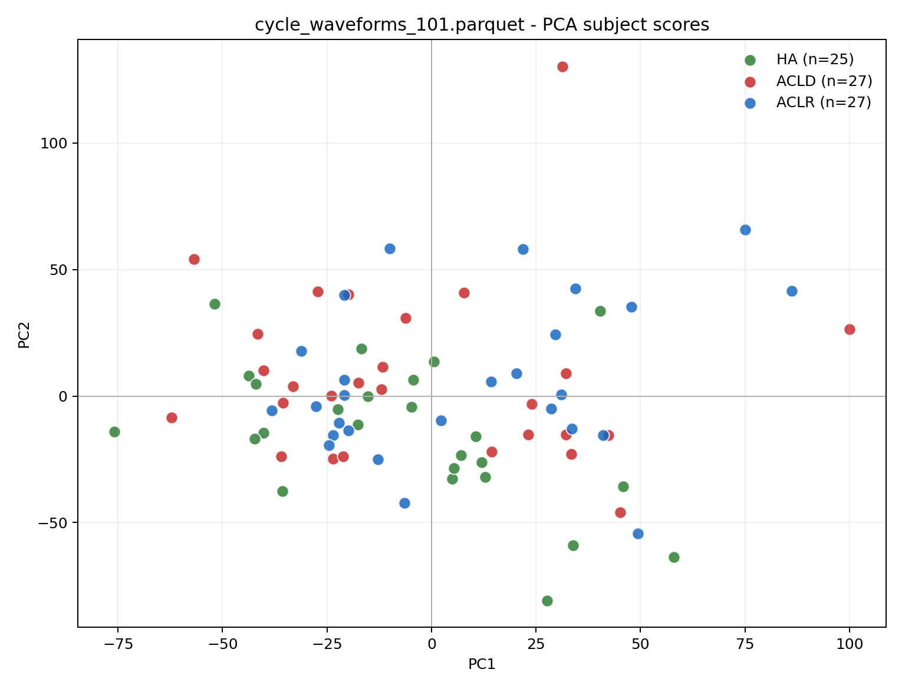
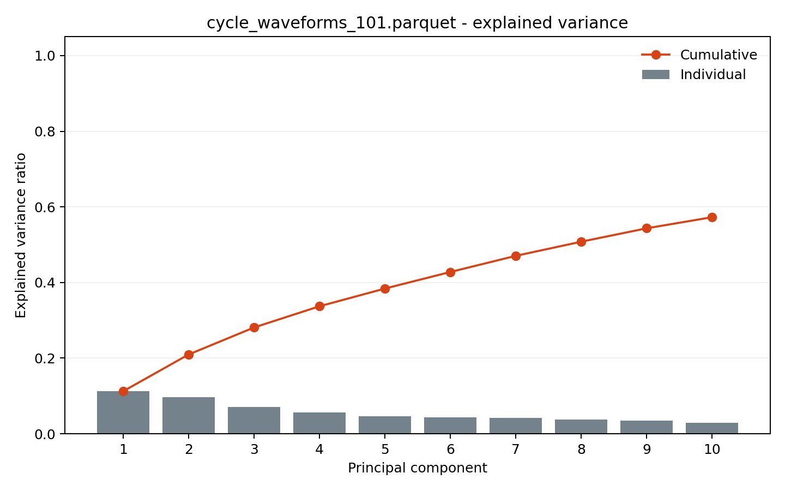
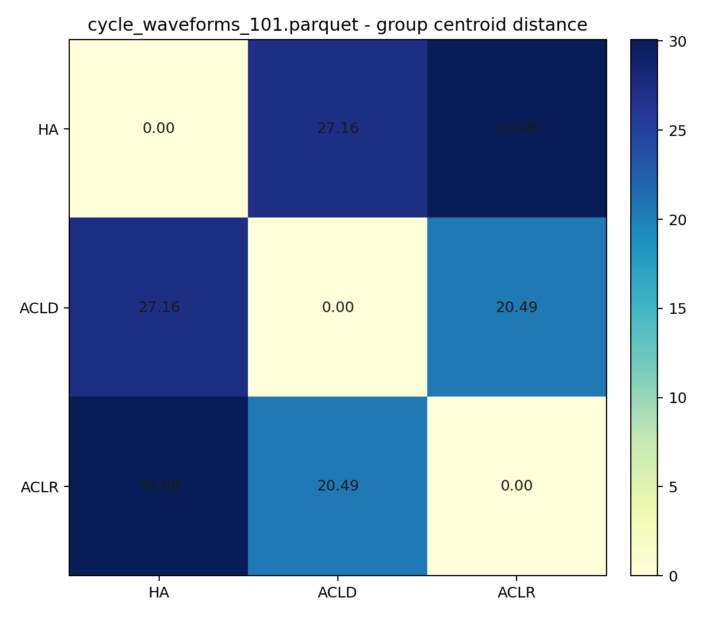
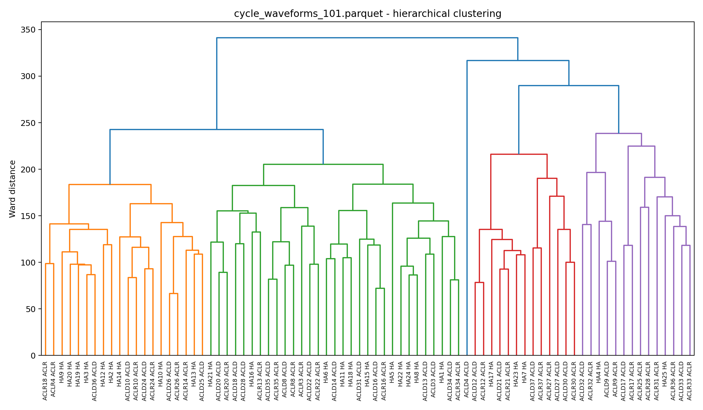
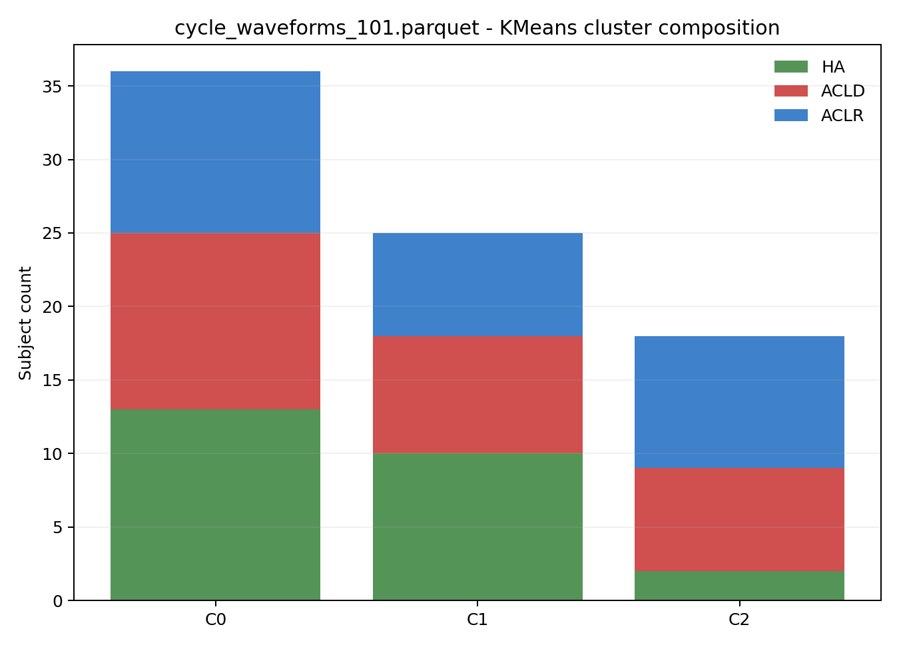
| feature | PC1 | abs_loading |
|---|---|---|
| normal__hip_int_rotation_077__max | 0.0239 | 0.0239 |
| normal__hip_int_rotation_076__max | 0.0239 | 0.0239 |
| normal__hip_int_rotation_074__max | 0.0239 | 0.0239 |
| normal__hip_int_rotation_075__max | 0.0239 | 0.0239 |
| normal__hip_int_rotation_078__max | 0.0239 | 0.0239 |
| normal__hip_int_rotation_073__max | 0.0239 | 0.0239 |
| normal__hip_int_rotation_071__max | 0.0238 | 0.0238 |
| normal__hip_int_rotation_072__max | 0.0238 | 0.0238 |
| normal__hip_int_rotation_070__max | 0.0238 | 0.0238 |
| normal__hip_int_rotation_069__max | 0.0238 | 0.0238 |
| normal__hip_int_rotation_079__max | 0.0236 | 0.0236 |
| normal__hip_int_rotation_068__max | 0.0236 | 0.0236 |
| feature | PC2 | abs_loading |
|---|---|---|
| fast__hip_adduction_078__mean | 0.0219 | 0.0219 |
| fast__hip_adduction_079__mean | 0.0219 | 0.0219 |
| fast__hip_adduction_077__mean | 0.0218 | 0.0218 |
| slow__hip_adduction_084__max | 0.0218 | 0.0218 |
| slow__hip_adduction_083__max | 0.0218 | 0.0218 |
| fast__hip_adduction_080__mean | 0.0217 | 0.0217 |
| slow__hip_adduction_085__max | 0.0217 | 0.0217 |
| slow__ankle_adduction_039__mean | -0.0217 | 0.0217 |
| slow__ankle_adduction_038__mean | -0.0217 | 0.0217 |
| slow__ankle_adduction_040__mean | -0.0217 | 0.0217 |
| slow__ankle_adduction_037__mean | -0.0216 | 0.0216 |
| slow__ankle_adduction_041__mean | -0.0216 | 0.0216 |
| feature | PC3 | abs_loading |
|---|---|---|
| slow__ankle_int_rotation_060__mean | 0.0277 | 0.0277 |
| slow__ankle_int_rotation_061__mean | 0.0277 | 0.0277 |
| slow__ankle_int_rotation_059__mean | 0.0276 | 0.0276 |
| slow__ankle_int_rotation_058__mean | 0.0274 | 0.0274 |
| slow__ankle_int_rotation_062__mean | 0.0274 | 0.0274 |
| slow__ankle_int_rotation_057__mean | 0.0273 | 0.0273 |
| slow__ankle_int_rotation_056__mean | 0.0272 | 0.0272 |
| slow__ankle_int_rotation_055__mean | 0.0272 | 0.0272 |
| slow__ankle_int_rotation_054__mean | 0.0271 | 0.0271 |
| slow__ankle_int_rotation_053__mean | 0.0271 | 0.0271 |
| slow__ankle_int_rotation_052__mean | 0.0269 | 0.0269 |
| slow__ankle_int_rotation_063__mean | 0.0269 | 0.0269 |